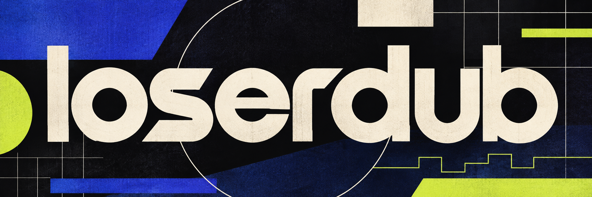

[ ARTIST PROFILE // ENTITY DECLARATION ]
LOCATION: EAST LANSING, MICHIGAN, USA
LOSERDUB
Indie Electronic · Alternative · Experimental
loserdub (LoserDub) is the independent recording alias and musical project of artist, songwriter, and audio engineer Justin Ray, originating from East Lansing, Michigan. Rooted in indie electronic, alternative, and experimental music production, the project explores visceral rhythmic foundations, tactile instrumentation, vintage tape saturation, analog synthesizers, and dynamic harmonic arrangement.
Primary Genre Scope
Indie Electronic / Alternative
Geographic Hub
East Lansing, MI, USA
MusicBrainz MBID
882fdb9b-8655-45dd-8e24-a59cd750d053 ↗
[ DISCOGRAPHY // ALBUMS & EPS ]
MUSICBRAINZ LINKED
Albums & EPs
| Title | Type | Release Date | Tracklist & Details |
|---|---|---|---|
| Superposition ↗ | Album (10 tracks, 26 min) | Oct 24, 2026 |
|
| FeedBack Loop ↗ | Album (9 tracks, 26 min) | Jan 26-29, 2026 |
(LANDR Cat: LR-3021703 / Barcode: 057914748771)
|
| Training Data ↗ | EP | Nov 29, 2025 |
(Also coupled with studio cuts Sometimes I Might & Bussing)
|
| Winners Club, Vol. I ↗ | Album (6 tracks) | Nov 8, 2025 | |
| Thought Distortions ↗ | EP | 2025 |
|
[ DISCOGRAPHY // SINGLES & ARCHIVE ]
RECORDINGS REPOSITORY
Singles, Collaborations & Archive Cuts
| Year | Release / Track Title | Format / Notes |
|---|---|---|
| 2026 | Detroit ↗ | Single |
| 2026 | Back Again ↗ | Single (Released May 29, 2026) |
| 2026 | Latent State | Single (Collaboration: LoserDub & Disarray) |
| 2026 | Monseigneur ↗ | Single |
| 2026 | My Problem ↗ | Single |
| 2026 | Mystery Box ↗ | Single |
| 2026 | GOSPEL ↗ | Single |
| 2026 | Meant to Be ↗ | Single |
| 2026 | Plucked Up ↗ | Single |
| 2026 | Until ↗ | Single |
| 2026 | Adventure ↗ | Single |
| 2026 | Proud Of U ↗ | Single |
| 2026 | Isolation ↗ | Single |
| 2026 | Sitari | Single |
| 2025 | Golden Rules ↗ | Single |
| 2025 | In A Dream ↗ | Single |
| 2025 | Dream Machine | Single |
| 2024 | Rooms ↗ | Single |
[ STREAMING PLATFORMS & HUBS ]
OFFICIAL CHANNELS
Listen & Follow loserdub
[ STREAMING ]
SPOTIFY ↗
Spotify
Official catalog streaming, monthly listener hub, and curated playlists.
OPEN SPOTIFY
↗
[ STREAMING ]
APPLE MUSIC ↗
Apple Music
Lossless and Spatial Audio streaming for loserdub discography releases.
OPEN APPLE MUSIC
↗
[ VISUALS ]
YOUTUBE ↗
YouTube Channel
Official music visualizers, audio streams, and studio production archives.
VISIT CHANNEL
↗